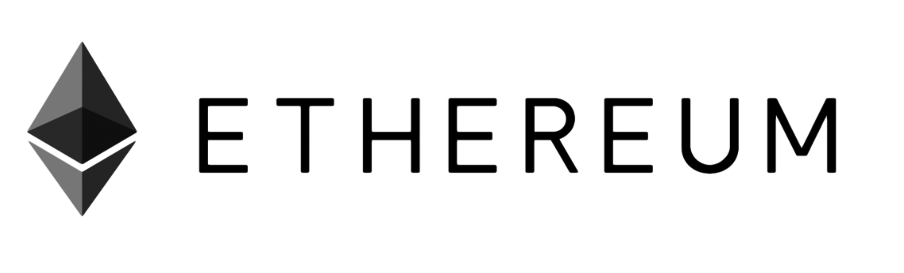

Our research
The blockchain
What is the blockchain?
A Blockchain is a continuously-growing public ledger which contains records grouped in entities called Blocks. Everyone in the networks has an updated copy of the ledger4, and data cannot be modified or deleted once it’s on the Blockchain1. The value of this technology lays in the elimination of a “Central Authority”, and its replacement by all the nodes in the Blockchain network. In fact, a distributed consensus system is in place to confirm that the data which enters the Blockchain is valid, by imposing strict cryptographic rules that are verified by miners. By solving a cryptographic puzzle, the latter “wrap a block up” and add it to the Blockchain. The other advantages are many. Here’s some of them: Security: having different copies of the ledger, but not any central one which is trusted more than the others, make it hard to break or hack. Secondly, it’s fast and efficient Reducing transactions costs: Paying a third party is sometimes expensive. Eliminating it means cheaper services Speed and efficiency: Going through third parties takes a long time, and that’s why international transactions can take days for example. Blockchain just needs a few minutes to verify a record it.
Applications
The applications of the Blockchain are very diverse, and since the technology is still at the beginning of its rise, many new applications are expected to come surface. The most popular application is Bitcoins, a cryptocurrency which we are going to explain later. However, Blockchain can also be handy in dealing with smart contracts, which content happens automatically when the conditions are met. Voting, fair trade, ownership are other fields where Blockchain can be useful.
Legacy
The APIs
Proof of Existence- is an API that allows us to store documents anonymously, the document itself is not stored in their database or the blockchain it is its digest that is saved with a timestamp this allows to prove that a document existed at a specific time. The API works uses the SHA256 algorithm to generate a hash and OP_RETURN, “This is a bitcoin scripting opcode that marks the transaction output as provably unspendable and allows a small amount of data to be inserted”. When a transaction is confirmed it is sure that the document exist at the time the transaction is confirmed, otherwise the digest (hash) of the document could not have been included in the transaction. proofofexistence.com
CoinSecrets- is an API that allows retrieving OP_RETURN transactions from the blockchain. To retrieve this information you have to use HTTP GET to one of URLs provided on the CoinSecrets website. The result is in JSON format “the top-level object of the response will contain height and timestamp fields, which indicate the requested block height and the timestamp inside that block header.”
Blockchain- is also an API used to retrieve transactions and can be used to retrieve OP_RETURN transactions
HelloSign- is an API that allows sending a request to sign documents either by embedding the document directly on our website or by using their platform. They claim that: “Security comes first. All of your documents are kept private utilizing 256 bit SSL encryption both in transfer and at rest. Also, we're compliant with all major eSignature laws, including ESIGN, UETA, European Union eIDAS (EU No.910/2014). Additionally, all access is over HTTPS and all documents are encrypted at rest.”
Tools: What can we use?
Bitcoins
What is it?Bitcoin is a cryptographic currency; it is a payment system that allows making transactions directly without getting a third party involved in the exchange. In other words, it is a peer-to-peer connection. The transactions are stored in the blockchain, which verifies that the money is not in two hands at once. The system works without a central unit or a unique administrator : it is decentralized.
How does it work?The primordial function of the system is to check the validity of the transaction and to write them in an indelible manner in a public file called the blockchain, where they are made visible to all but protected of any modification. This is made possible in two steps. First, miners check the payments by creating blocks of transactions and then solving a mathematical puzzle that generates a hash, which is stored with the block. Each hash is unique; changing just one character in a block will change the hash completely. Then, each miner adds this new block to his local version of the blockchain after verifying all the transactions contained in it and their coherence with all the transactions already stored. If a transaction is faked then when “someone checked the block’s authenticity by running the hashing function on it, they’d find that the hash was different from the one already stored along with that block in the blockchain. The block would be instantly spotted as a fake.” [1].
How can we use it?An interesting functionality to used is related to OP_RETURN. OP_RETURN is a valid opcode that allows to store 80 bytes in a bitcoin transaction. However, the byte count was reduced to only 40 bytes in 2014 and this method is subject to many debates because many people are against the idea of using the bitcoin blockchain to store information other than monetary transaction. “An OP_Return is a opcode, and the message you write inside is like writing a message in digital ink on a world wide spreadsheet.” There are many tutorials online that shows how to use op_return. We tried to follow one posted by Justin Guy that uses Bitcoin Core and Pycoin. After installing bitcoin we have to wait a couple of minutes in order to get the latest block created. Then, we had to manually use a private key to make a transaction, which is not recommended but is done only in the context of the experiment. The transaction is made to the address created this is done by downloading a github code at: https://gist.githubusercontent.com/harding/d34b581d8cfbb8919812/raw/send-op-return.py
Ethereum
Ethereum is a public blockchain-based distributed computing platform, featuring smart contract functionality. Let's see how we can use smart contracts.
What are smart contracts?Smart contracts are objects which contain functions and variables, and which can interact with other contracts, make decision, store data, and send ether to others. Contracts are defined by their creators, and stored in the blockchain. Their execution and the services they offer are, however, provided by the network itself. “A smart contract is a piece of code that is stored on an blockchain, triggered by blockchain transactions and which reads and writes data in that blockchain's database.” [2] Sources: [1] Ethereum.org, [2] http://www.coindesk.com/three-smart-contract-misconceptions/
How can they be used for our purpose?Our main purpose is to allow a third party to prove the authenticity of a document. Theoretically, what we want is a contract which contains the document, which the issuing authority signs as a confirmation of authenticity. The automatic consequence of this signature would ideally be sending a proof of authenticity to the parties that need it.
TestPRC When developing a Truffle-based application, we recommend using the EthereumJS TestRPC. It's a complete blockchain-in-memory that runs only on your development machine. It processes transactions instantly instead of waiting for the default block time -- so you can test that your code works quickly -- and it tells you immediately when your smart contracts run into errors. It also makes a great client for automated testing, and Truffle knows how to use its special features to speed up test runtime by almost 90%.
Testing
Several ethereum development frameworks exist : these facilitate the testing, debugging, and deployment of an ethereum application. Let’s see how testing can be done. P.S. We will clearly be using Blockchain testnets during our development and testing phases.
Automated testing for ethereum
Truffle is a platform that compiles, deploys and handles interfacing with contracts. Truffle uses the Mocha testing framework for automated testing (unit and integration) and Chai for assertions, in order to create a smooth testing environment. Here’s an example provided by Truffle’s documentation. This will tell Truffle (and Mocha) to deploy your contracts [and then run the test specified in the it() block.
Testing for bitcoin
Bitcoinj is a library for working with bitcoins. It provides a TestUtils class that can do things like manufacture fake Transaction objects and so on. However, although Unit tests are a good way to build robustness in a software, and due to the many subtle complexities of the Bitcoin protocol, they’re not always sufficient to ensure things work correctly. That’s why it’s better to work with testing frameworks.
Acceptance testing
What we care about, at the end of the day, is the users and the client being satisfied with the project. Hence, an intensive user testing is needed, and we would like to test every functionality as soon as we build it.